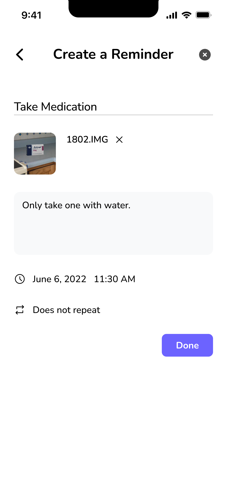

Prototype
Mobile App - For Caregiver
We created a mobile app prototype on Figma which would allow caregivers to input tasks and activities. The reminders would sync to the smart TV device to remind patients of their daily tasks.
Version 1
On our first round of prototyping we kept screens simple and basic. We wanted to get a general understanding of the layout and user flow that caregiver would need to input tasks for the person with dementia.
Version 2
We decided to add more illustrations to our final prototype based on feedback that our screens needed to be more visual for caregivers. We also kept steps simple and short so caregivers could quickly input tasks for their patients.

